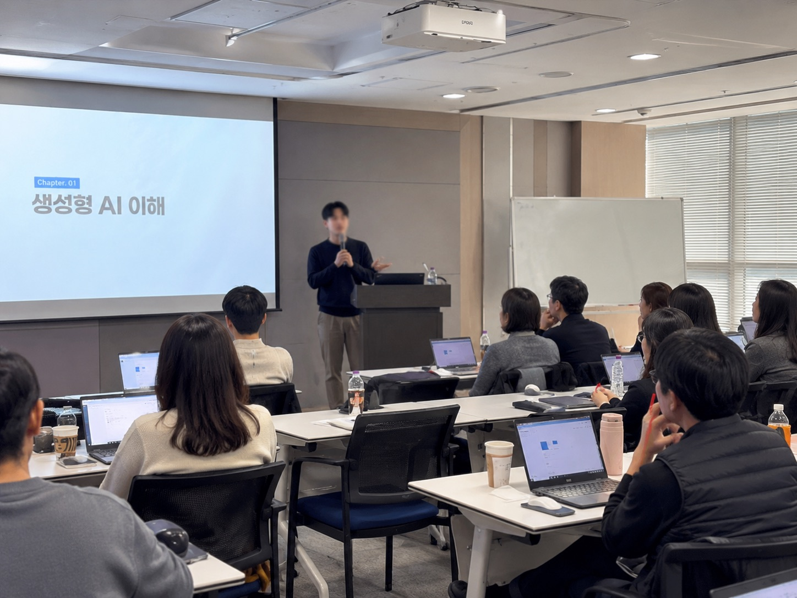
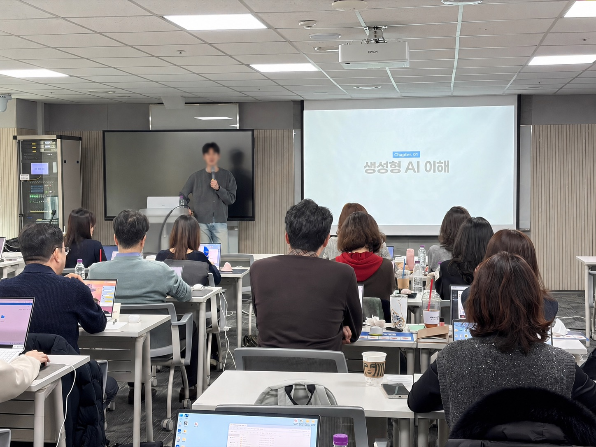

도구 소개로 끝나는 특강이 아니라, 어제도 실제로 돌아간 자동화와 사례로 가르칩니다. 교육이 끝나면 약 1개월 질문 채널로 정착까지.
현장에서 받은 평가와 실제 운영 중인 결과물 기준입니다.
대부분의 기업·기관이 같은 지점에서 막힙니다.
"강의 끝나고 한 달 뒤, 팀 메신저엔 다시 '복붙'만 돌아다닙니다. 교육 효과가 어디로 갔는지 모르겠어요."
"강사가 '이렇게 쓰면 좋아요'까진 알려줬는데, 우리 업종에선 어떻게 쓰는지는 본인도 모르더라고요."
"교육비 결재 올렸는데, 한 달 뒤 부서장이 '이거 쓰는 사람 있어?' 라고 물어볼까봐 무서워요."
강의실에서 끝나지 않는 교육의 네 가지 차이.
강의에 나오는 도구·자동화는 전부 실제로 운영하거나 직접 만든 것에서 가져옵니다. 책에서 본 이야기, 남의 사례를 옮긴 강의가 아닙니다. App Store에 출시한 앱부터 매일 돌아가는 자동화 파이프라인까지 — 어제 만진 것을 오늘 보여드립니다.
조직별 1~2회 인터뷰 후 모듈 구성·실습 데이터·예제를 매번 새로 설계합니다.
약 1개월간 질문 채널을 운영해 실무 적용까지 정착시키는 것을 목표로 합니다.
강사가 곧 설계자고 운영자입니다. 첫 미팅에서 곧바로 결정하고, 일정 조정·커리큘럼 수정·범위 변경이 사람 한 명 안에서 다 끝납니다.
Aible은 한 사람이 처음부터 끝까지 직접 운영하는 AI 교육 브랜드입니다.
조직 상황·인원·목표에 맞춰 커리큘럼을 새로 설계합니다.
ChatGPT·Claude·자동화 도구를 조직의 업무 흐름에 맞춰 가르치는 출강 프로그램.
본인 업무 한 가지를 정해 실제로 자동화되는 결과물까지 함께 만드는 코칭.
단발 교육이 아닌, 조직에 AI 활용이 정착되는 장기 운영을 같이 만듭니다.
실제 기업 출강에서 쓴 교육설계서 양식 그대로 보여드립니다.
| 시간 | 모듈 | 학습 내용 | 방식 |
|---|---|---|---|
| 30분 | M1 · AI 이해 | 일반 LLM vs 코딩 에이전트 — "AI를 쓰는 사람"에서 "만드는 사람"으로 | 강의 |
| 30분 | M2 · 환경 세팅 | 도구 설치와 첫 실행 (사내 보안망은 교육 전 담당자와 사전 점검) | 실습 |
| 40분 | M3 · 요청 공식 | 언제 + 어디서 + 무엇을 + 어떻게 + 어디로 — 한 문장으로 AI에게 일 시키기 | 강의 + 실습 |
| 70분 | M4 · 자동화 실습 | 메신저 알림봇을 직접 제작 — "세팅은 1회, 실행은 자동" 구조 체험 | 실습 |
| 50분 | M5 · 문서 자동화 | 기획서·제안서 초안이 자동으로 나오는 작업 흐름 구성 | 실습 |
| 20분 | M6 · 적용 설계 | 1인 1개 업무 적용 계획 수립 + 사후 질문 채널 안내 | 워크숍 |
신청부터 정착까지, 단계마다 하는 일이 정해져 있습니다. 스크롤로 살펴보세요.
카카오톡·메일로 신청하면 30~60분 진단 미팅을 잡습니다. 조직 상황·인원·이미 쓰는 도구를 듣는 자리입니다.
비용 없음진단 내용 기반으로 모듈 구성·실습 데이터·예제를 새로 짭니다. 견적과 일정도 이 단계에서 확정합니다.
설계안 + 견적 제공1~16시간, 부서별 분반·합반 모두 가능합니다. 실제 운영 중인 도구를 그대로 실습 사례로 사용합니다.
전국 출강교육 종료 후 약 1개월간 질문 채널을 열어두고, 실무 적용에서 막힌 부분을 같이 풉니다.
사후 질문 채널교육이 끝난 뒤 설문과 메시지로 직접 받은 피드백입니다. (호버하면 멈춥니다)
함께한 조직 — SK텔레콤 · 그로스업 · IT 유통회사 P사 · 온라인 강의 플랫폼


'이걸 내 업무에 어떻게 적용하지?'라는 고민의 첫걸음이 됐어요. 처음이라 장벽이 높았는데 쉽게 설명해주셔서, 재밌게 듣고 바로 써먹고 있습니다.
전 과정이 매우 유익했습니다. 다시 반복 교육을 받고 싶을 정도예요. 배운 자동화 도구들이 업무 활용에 큰 도움이 될 것 같습니다.
커리큘럼이 우리 매장 업무에 그대로 맞춰져 있어서 듣자마자 적용 가능했어요. 다른 강의는 "그래서 뭐 하라는 거지" 였는데, 이건 끝나고 바로 써먹게 됩니다.
진단 미팅 전에 가장 많이 묻는 것들만 추렸습니다.
어떤 교육이 가능한지, 현장 사례로 먼저 보여드릴게요.